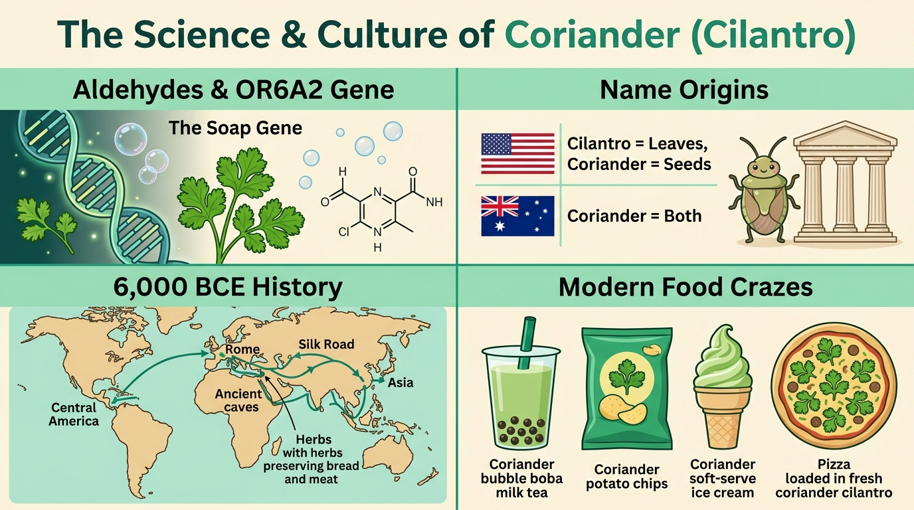

香菜爭議並非單純飲食偏好，而是特定基因使大腦將肥皂也含有的醛類化學物解讀為不快氣味。
specific gene / process as美式英語區分葉片 cilantro 與種子 coriander，英澳則統稱 coriander；字源更來自古希臘文的臭蟲。
cilantro while seeds are...歷史追溯至西元前 6000 年，羅馬人用以調味麵包與防腐肉品，中世紀傳遍歐洲並隨探險家遠播亞洲。
stretches back / had spread台灣率先推出香菜奶茶與洋芋片，日本連鎖店必勝客推出的香菜披薩更因太受歡迎而加倍香菜量回歸。
such a hit that / twice the amountFew + 複數名詞 + V + as ... as Xspark / trigger / cause dispute。While（雖然）＋ taste 名詞與動詞同句對照fresh taste 是名詞；後半句 tastes like soap 是連綴動詞 + like + N.！Many people... However, many others... 浓缩成一句 While fans..., critics...，結構更緊湊。chemicals (that are) called aldehydes 省略關代與 be 動詞。, causing their brains to process... 表達自然而然產生的結果。is about more than personal preference 換成 goes beyond personal preference（超越個人偏好）。those (who are/were) + p.p. 凡是……的人those raised eating it 等於課文的 people who grew up eating it！those who... 或 individuals who... 取代口語的 `people who...`。call A B vs. 被動 A is called Bthe leaves are called cilantro，改寫版改為主動 Americans call the leaves cilantro，句意完全相同！comes from a Greek word 升級為學測高頻片語 be derived from（源自於……）。had spread 與過去簡單式 introduced 的先後順序had spread），後來探險家才引介到亞洲（before explorers introduced it to Asia）。carried the herb to new lands 換成 introduced it to Asia（將它引介／傳入亞洲）。a coriander pizza (which was) released by ...Pizza Hut released a coriander pizza 改為被動分詞修飾，讓整句一氣呵成接上 became such a hit that...！lead the way in + 領域/產品 表示「在……方面領先群倫」。1. 請選出最適合填入 (__1__) 的連接詞：
2. 請選出最適合填入 (__2__) 的分詞構句形式：
causing 表達前面子句所造成的自然結果（= which causes）。3. 請選出最適合填入 (__3__) 表示「源自於」的分詞：
a term (which is) derived from... 表「源自於……的詞彙」。4. 請選出最適合填入 (__4__) 的動詞時態：
by the Middle Ages（到了過去某時間點為止），用過去完成式 had spread。5. 請選出最適合填入 (__5__) 的字詞：
popular hit 與結果子句 that...，公式為 such + a + Adj. + 單數可數名詞 + that。6. Heated ________ over whether coriander belongs on pizza has divided food lovers across Asia.
7. Human brains ________ visual and chemical signals from food in less than a second to determine if it is safe to eat.
8. Thousands of ________ fans gathered at the annual festival wearing green outfits to show their love for cilantro.
9. Taiwanese night markets are famous for offering a wide variety of local ________ and creative snacks.
10. Which of the following sentences is grammatically CORRECT for expressing “two times the amount”?
twice + as + 原級 (much) + N. + as 等於 twice the amount of coriander。(A) twice 避免搭配 比較級 + than。11. The coriander ice cream my sister bought at the night market ________ surprisingly refreshing.
refreshing（清爽的），連綴動詞直接用 tastes + Adj.，不加 like！12. 【中翻英除錯】「這場關於香菜的爭論可以追溯到數千年前。」哪一句完全正確？
the debate over...，「追溯數千年」用主動語態 stretches back thousands of years。13. Why does the author mention “aldehydes” in the first paragraph of the rewritten report?
14. How does British English differ from American English in naming the plant?
15. What can be inferred about the coriander trend in East Asia today?